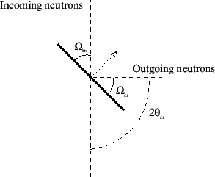

Keeping your current components, insert a Monochromator_flat component (use the component library index to get the needed parameters) and a new set of PSD and L_monitor after the monochromator. Two new arms should be inserted to define the rotation point at the monochromator. One is used to rotate the monochromator, while the other rotates the instrument components that follow.
Insert the two new arms at (0,0,2) relative to the origin and the monochromator at (0,0,0) relative to the monochromator arm. Also, add two new input parameters of your instrument, which we will call OMM (Omega Monochromator) and TTM (Two Theta Monochromator). These will define the angles of rotation at the monochromator as portrayed in Figure 3.
Figure 3:
Illustration of the monochromator orientation.
|

|